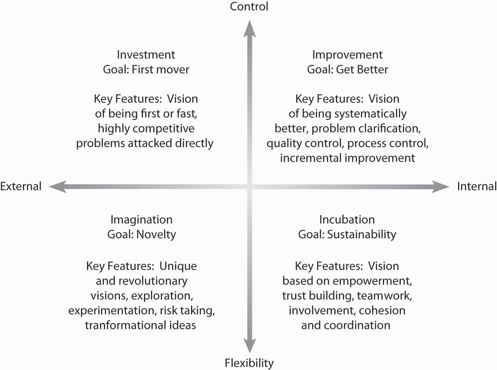

Creativity and passion are of particular relevance to mission and vision statements. A simple definition of creativityThe generation of new ideas. is the power or ability to invent. We sometimes think of creativity as being a purely artistic attribute, but creativity in business is the essence of innovation and progress. PassionAn intense, driving, or overmastering feeling or conviction. Passion is also associated with intense emotion compelling action. at least in the context we invoke here, refers to an intense, driving, or overmastering feeling or conviction. Passion is also associated with intense emotion compelling action. We will focus mostly on the relationship between creativity, passion, and vision in this section because organizational visions are intended to create uneasiness with the status quo and help inform and motivate key stakeholders to move the organization forward. This means that a vision statement should reflect and communicate something that is relatively novel and unique, and such novelty and uniqueness are the products of creativity and passion.
Creativity and passion can, and probably should, also influence the organization’s mission. In many ways, the linkages might be clearest between creativity and vision statements and passion and mission statements because the latter is an expression of the organization’s values and deeply held beliefs. Similarly, while we will discuss creativity and passion separately in this section, your intuition and experience surely tell you that creativity eventually involves emotion, to be creative, you have to care about—be passionate about—what you’re doing.
More recently, work by DeGraf and Lawrence, suggest a finer-grained view into the characteristics and types of creativity.DeGraf, J., & Lawrence, K. A. (2002). Creativity at Work: Developing the Right Practices to Make It Happen. San Francisco: Jossey-Bass. They argued that creativity “types” could be clustered based on some combination of flexibility versus control and internal versus external orientation. For the manager, their typology is especially useful as it suggests ways to manage creativity, as in simply hiring creative individuals. As summarized in the figure, their research suggests that there are four types of creativity: (1) investment (external orientation with high control), (2) imagination (external orientation with flexibility emphasis), (3) improvement (internal orientation with high control), and (4) incubation (internal orientation with flexibility emphasis).
The first type of creativity, investment, is associated with speed—being first and being fast. It is also a form of creativity fostered from the desire to be highly competitive. Perhaps one of the most recent examples of this type of creativity crucible is the beer wars—the battle for U.S. market share between SABMiller and Anheuser Busch (AB; Budweiser). Miller was relentless in attacking the quality of AB’s products through its advertisements, and at the same time launched a myriad number of new products to take business from AB’s stronghold markets.Retrieved October 27, 2008, from http://www.bizjournals.com/milwaukee/stories/2004/05/31/story7.html.
The second type of creativity, imagination, is the form that most of us think of first. This type of creativity is characterized by new ideas and breakthroughs: Apple’s stylish design of Macintosh computers and then game-changing breakthroughs with its iPod and iPhone. Oftentimes, we can tie this type of creativity to the drive or genius of a single individual, such as Apple’s Steve Jobs.
Figure 4.8 Four Creativity Types
Adapted from DeGraf, J., & Lawrence, K. A. (2002). Creativity at Work: Developing the Right Practices to Make It Happen. San Francisco: Jossey-Bass.
Where big ideas come from the imagination quadrant, improvement is a type of creativity that involves making an existing idea better. Two great examples of this are McDonald’s and Toyota. Ray Kroc, McDonald’s founder, had the idea of creating quality and cooking standards for preparing tasty burgers and fries. While there were many other burger joints around at the time (the 1950s), Kroc’s unique process-oriented approach gave McDonald’s a big advantage. Similarly, Toyota has used the refinement of its automaking and auto-assembly processes (called the Toyota Business System) to be one of the largest and most successful, high-quality car makers in the world.
Finally, the fourth area of creativity is incubation. Incubation is a very deliberate approach that concerns a vision of sustainability—that is, leaving a legacy. This type of creativity is more complex because it involves teamwork, empowerment, and collective action. In their chapter on problem solving, David Whetten and Kim Cameron provide Gandhi as an example of incubation creativity:
“Mahatma Gandhi was probably the only person in modern history who has single-handedly stopped a war. Lone individuals have started wars, but Gandhi was creative enough to stop one. He did so by mobilizing networks of people to pursue a clear vision and set of values. Gandhi would probably have been completely noncreative and ineffective had he not been adept at capitalizing on incubation dynamics. By mobilizing people to march to the sea to make salt, or to burn passes that demarcated ethnic group status, Gandhi was able to engender creative outcomes that had not been considered possible. He was a master at incubation by connecting, involving, and coordinating people.”Whetten, D., & Camerson, K. (2007). Developing Management skills. (7th ed.). Upper Saddle River, NJ: Pearson/Prentice-Hall, 185.
While no one of these four types of creativity is best, they have some contradictory or conflicting characteristics. For example, imagination and improvement emphasize different approaches to creativity. The size of the new idea, for instance, is typically much bigger with imagination (i.e., revolutionary solutions) than with improvement (i.e., incremental solutions). Investment and incubation also are very different—investment is relatively fast, and the other relatively slow (i.e., incubation emphasizes deliberation and development).
In this section, we introduce you to two creativity tools: SCAMPER and the Nominal Group Technique. This set of tools is not exhaustive but gives you some good intuition and resources to develop new ideas—either to craft a vision for a new company or revise an existing mission and vision. The first three tools can be used and applied individually or in groups; Nominal Group Technique is designed to bolster creativity in groups and can build on individual and group insights provided by the other tools.
All these tools help you to manage two divergent forms of thinking necessary for creativity—programmed thinking and lateral thinking. Programmed thinkingThinking that relies on logical or structured ways of creating a new product or service (often called left-brained thinking). often called left-brained thinking, relies on logical or structured ways of creating a new product or service. In terms of mission and vision, this means a logical and deliberate process is used to develop the vision statement. Lateral thinkingA thinking process that is about changing patterns and perceptions (often called right-brained thinking). a term coined by Edward DeBono in his book The Use of Lateral Thinking (1967), is about changing patterns and perceptions; it is about ideas that may not be obtainable by using only traditional step-by-step, programmed, logic.De Bono, E. (1992). Serious Creativity. New York: Harper Business; Osborn, A. (1953). Applied Imagination. New York: Scribner’s . Lateral thinking draws on the right side of our brains.
Each type of approach—programmed versus lateral—has its strength. Logical and disciplined programmed thinking is enormously effective in making products and services better. It can, however, only go so far before all practical improvements have been carried out. Lateral thinking can generate completely new concepts and ideas and brilliant improvements to existing systems. In the wrong place, however, it can be impractical or unnecessarily disruptive.
Developed by Bob Eberle, SCAMPERSCAMPER is a checklist tool that helps you to think of changes you can make to an existing marketplace to create a new one: a new product, a new service, or both. is a checklist tool that helps you to think of changes you can make to an existing marketplace to create a new one—a new product, a new service, or both.Eberle, R. (1997). Scamper: Creative Games and Activities for Imagination Development. New York: Prufrock Press. You can use these changes either as direct suggestions or as starting points for lateral thinking. This, in turn, can inspire a new vision statement. Table 4.1 "Creativity through SCAMPER" provides you with the SCAMPER question steps and examples of new products or services that you might create.
Table 4.1 Creativity through SCAMPER
| Questions: | Examples: |
|---|---|
| Substitute: What else instead? Who else instead? Other ingredients? Other material? Other time? Other place? | Vegetarian hot dogs |
| Combine: How about a blend? Combine purposes? Combine materials? | Musical greeting cards |
| Adapt: What else is like this? What other idea does this suggest? How can I adjust to these circumstances? | Snow tires |
| Modify: Different order, form, shape? Minify: What to make smaller? Slower? Lighter? What to do with less frequency? Magnify: What to make higher? Longer? Thicker? What to do with greater frequency? | Scented crayons; Bite-sized Snickers bars; Super-sized french fries |
| Put to other uses: New ways to use as is? Other uses I modified? Other places to use an item or movement? | Towel as fly swatter |
| Eliminate: What to remove? Omit? Understate? | Cordless telephone |
| Rearrange: Other layout? Other sequence? Transpose cause and effect? Transpose positive and negative? How about opposites? Reverse: Interchange components? Other pattern? Backward? Upside down? | Vertical stapler; Reversible clothing |
As shown in the Table 4.1 "Creativity through SCAMPER", by taking a topic or problem and then using SCAMPER, you can generate possible new products. It may be some combination of these SCAMPER changes that lead to highly innovative solutions. For instance, the entertainment company Cirque du Soliel has modeled its shows on the traditional circus. However, it has adapted aspects of theater and opera, eliminated animals, and reduced the number of rings from three to one. As a result, it offers a highly stylized (and much more expensive!) version of what, nostalgically, we call a circus today. Many of the ideas may be impractical. However, some of these ideas could be good starting points for a new organization or revision of the vision for an existing one.
The Nominal Group Technique (NGT)A widely used small group process technique whose purpose is to produce a large number of ideas in a relatively short period of time. is a method of facilitating a group of people to produce a large number of ideas in a relatively short time.This section is reproduced with permission of the University of Wisconsin Extension Program. A circulation version can be found at http://www.uwex.edu/ces/pdande/resources/pdf/Tipsheet3.pdf (retrieved October 28, 2008). Additional information on NGT can be gained by reading the following: Delbecq, A., Van de Ven, A., & Gustafson, D. (1975). Group Techniques for Program Planning: A Guide to Nominal Group and Delphi Processes. Glenview, IL: Scott, Foresman; Tague, N. (1995). The Quality Toolbox. Milwaukee, WI: ASQC Quality Press; Witkin, B., & Altschuld, J. (1995). Planning and Conducting Needs Assessment: A Practical Guide. Thousands Oaks, CA, Sage;. In addition to using NGT to develop a mission and vision statement, it can be useful:
As shown in “NGT Preparation and Supplies,” preparation and supplies are modest. It encourages contributions from everyone by allowing for equal participation among group members. A question is posed to the group. Individually and silently, each participant writes down his or her ideas. In round-robin fashion, each member supplies an idea until all ideas are shared. Generally, 6 to 10 people participate. “Nominal” means that the participants form a group in name only. For most of the session, they do not interact as they would in other group processes.
Formulate your discussion question. Ensure that the wording prevents misunderstanding and is objective. Supplies needed include:
The group is divided into small work groups, each with a leader. A flip chart and markers are needed at each table. Position the flip chart so that all can see the ideas. The remaining simple procedures are summarized in “NGT Procedure.”
Passion as we invoke the term in this chapter, refers to intense, driving, or overmastering feeling or conviction. Passion is also associated with intense emotion compelling action. Passion is relevant to vision in at least two ways: (1) Passion about an idea as inspiration of the vision and vision statement and (2) shared passion among organizational members about the importance of the vision.
Entrepreneur Curt Rosengren makes this observation about the relationship between passion and entrepreneurship: “Strangely, in spite of its clear importance, very few entrepreneurs or managers consciously incorporate passion into their decisions, ultimately leaving one of their most valuable assets on their path to success largely to chance, even though there is little question that passion can be a part of vision creation.”Retrieved October 28, 2008, from http://www.astroprojects.com/media/MSPassion8.html. Rosengren comments further that:
“Passion is the essence of the entrepreneurial spirit. It is an entrepreneur’s fuel, providing the drive and inspiration to create something out of nothing while enduring all the risks, uncertainty, and bumps in the road that that entails.
“Entrepreneurs’ lives consist of a nonstop mission to communicate their vision and inspire others to support their efforts. As evangelists, salespeople, fundraisers, and cheerleaders they need to breathe life into their vision while enlisting others in their dream. From creating a vision for the future to selling the idea to investors, from attracting high-quality employees to inspiring them to do what nobody thought possible, that passion is a key ingredient.
“Passion also plays a key role in their belief that they can achieve the so-called impossible, bouncing back from failure and ignoring the chorus of No that is inevitably part of the entrepreneurial experience.
“Robin Wolaner, founder of Parenting magazine and author of Naked In The Boardroom: A CEO Bares Her Secrets So You Can Transform Your Career, put it succinctly when she said, ‘To succeed in starting a business you have to suspend disbelief, because the odds are against you. Logic is going to stop you.’ Passion, on the other hand, will help you fly.”Retrieved October 28, 2008, from http://www.astroprojects.com/media/MSPassion8.html.
Passion doesn’t just have benefits for the individual entrepreneur or manager when formulating a vision statement, it can help the whole business thrive. While there is little academic research on the relationship between passion and vision, studies suggest that fostering engagement, a concept related to passion, in employees has a significant effect on the corporate bottom line. Gallup, for instance, has been on the forefront of measuring the effect of what it calls employee engagement. Employee engagementA concept, related to passion, that is generally viewed as managing discretionary effort; that is, when employees have choices, they will act in a way that furthers their organization’s interests. is a concept that is generally viewed as managing discretionary effort; that is, when employees have choices, they will act in a way that furthers their organization’s interests. An engaged employee is fully involved in, and enthusiastic about, his or her work.http://www.gallup.com/consulting/52/Employee-Engagement.aspx. The consulting firm BlessingWhite offers this description of engagement and its value (and clear relationship with passion):
“Engaged employees are not just committed. They are not just passionate or proud. They have a line-of-sight on their own future and on the organization’s mission and goals. They are ‘enthused’ and ‘in gear’ using their talents and discretionary effort to make a difference in their employer’s quest for sustainable business success.” (Employee Engagement Report 2008)BlessingWhite. (2008, April). 2008 employee engagement report. http://www.blessingwhite.com/eee__report.asp.
Engaged employees are those who are performing at the top of their abilities and happy about it. According to statistics that Gallup has drawn from 300,000 companies in its database, 75%–80% of employees are either “disengaged” or “actively disengaged.”Retrieved October 28, 2008, from http://gmj.gallup.com/content/24880/Gallup-Study-Engaged-Employees-Inspire-Company.aspx.
That’s an enormous waste of potential. Consider Gallup’s estimation of the impact if 100% of an organization’s employees were fully engaged:
Job satisfaction studies in the United States routinely show job satisfaction ratings of 50%–60%. But one recent study by Harris Interactive of nearly 8,000 American workers went a step further.Retrieved October 29, 2008, from http://www.agewave.com/media_files/rough.html.http:// What did the researchers find?
Consciously creating an environment where passion is both encouraged and actively developed can yield an enormous competitive advantage. That environment starts at the top through the development and active communication of mission and vision.
You learned about the relationship between creativity and passion and mission and vision. You learned that creativity relates to the power or ability to create and that passion is intense emotion compelling action. Creativity is important if the desired mission and vision are desired to be novel and entrepreneurial; passion is important both from the standpoint of adding energy to the mission and vision and to key stakeholders following the mission and vision.